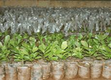

HORT 282 :: Lecture 17 :: CASHEW

CASHEW
(Anacardium occidentale, Anacardiaceae)
Cashew is native of south Eastern Brazil, from where it was introduced to Malabar Coast of India in the sixteenth century to cover baren hills and for soil conservation.
Though India produces only 40 percent of the world production of cashew nuts, it meets 90 percent of the world export of cashew kernels. The export earning from cashew constitutes about 2 percent of the total foreign earning from agricultural produces. Cashew growing area is centered only on the coastal area in India. Kerala followed by Tamilnadu occupy more area under cashew nut.
Botany
The cashew tree is a low spreading, evergreen tree with a very prominent tap root. The leaves are alternative, simple, glabrous, obovate, round and pinnately veined. The inflorescence is an indeterminate panicle of polygamomonoecious type i.e. flowers are either bisexual or staminate but both occur intermixed in the same inflorescence. On the same tree, the perfect flowers are larger in size than the staminate. Pollination is carried out by flies, bees and ants as well as by wind.
The fleshy peduncle, the ‘cashew apple’, is juicy and sweet when ripe. The apple varies in size, colour, juice content and taste. It is rich source of vitamin c and sugar. The cashew fruit is a kidney shaped drupaceous nut, greenish grey in colour. The nuts vary in size, shape, weight (3-20g) and shelling % (15 –30%).
Flower |
|
|
Climate and Soil
It is hardy tropical plant and does not exact a very specific climate. It can come up in places situated within 35° latitude on either side of the equator and also in the hill ranges up to 700 m MSL. It can grow well in places receiving rainfall from 50 cm to 250cm and tolerates a temperature range of 25°-49°c .It requires a bright weather and does not tolerate excessive shade.
Cashew is cultivated on a wide variety of soils in India like laterite, red and coastal sandy soil. To a limited extent, it is also grown on black soils. It can be also grown in hill slopes in virgin organic matter rich soils. They do not prefer water logged or saline soils.
Varieties: The important characteristics of some of the cultivars of cashew are as follows.
S. No |
Variety |
Nut yield (Kg/tree) |
Nut wt (g) |
Shelling (%) |
Kernel wt (g) |
Grade |
State |
Year |
1 |
Amrutha |
18.5 |
7.18 |
31.58 |
2.10 |
W210 |
Kerala |
1998 |
2 |
Subala |
21.90 |
9.80 |
29.40 |
2.88 |
W210 |
Kerala |
1996 |
3 |
Priyanka |
17.03 |
10.8 |
26.57 |
2.87 |
W180 |
Kerala |
1995 |
4 |
Madakathara |
17.00 |
7.25 |
26.00 |
1.88 |
W210 |
Kerala |
1990 |
5 |
Vengurla-1 |
19.0 |
6.2 |
31.0 |
1.39 |
W240 |
Maharastra |
1974 |
6 |
Vengurla-2 |
24.0 |
4.30 |
32.0 |
1.0 |
W320 |
Maharastra |
1979 |
7 |
Vengurla-4 |
17.2 |
7.70 |
31.0 |
1.91 |
W210 |
Maharastra |
1981 |
8 |
Vengurla-5 |
16.6 |
4.5 |
30.0 |
1.0 |
W400 |
Maharastra |
1984 |
9 |
Vengurla-7 |
18.5 |
10.0 |
30.0 |
2.90 |
W180 |
Maharastra |
1997 |
10 |
VRI-1 |
7.20 |
5.0 |
28.0 |
1.40 |
W240 |
TamilNadu |
1981 |
11 |
VRI-2 |
7.40 |
5.10 |
28.3 |
1.45 |
W240 |
TamilNadu |
1985 |
12 |
VRI-3 |
11.68 |
7.18 |
19.1 |
2.16 |
W210 |
TamilNadu |
1992 |
13 |
VRI-4 |
16.60 |
6.63 |
28.5 |
1.70 |
W320 |
TamilNadu |
2000 |
Ullal-1:It is a high yielding (19.6 kg nuts/tree) variety released for entire Karnataka. This is an early bearing cultivar with high sex ratio (male: bisexual) and high shelling percentage (30.7%).The size of the nut is medium. The flowering commences from last week of November and extends up to middle of March and harvesting is completed by May thus enabling to escape the monsoon showers which otherwise results in the loss of crop. The variety has 144nuts per kg and medium sized apples with yellow colour.
Ullal-2: This is another high yielding (17.9kg nuts /tree) variety released for entire Karnataka. This variety also possesses desirable characters, such as, early flowering and bearing, high sex ratio and high shelling percentage (30%) and as such highly congenial for cultivation in hill zone. It has 164nuts/kg with medium sized and yellowish red apple.
Ullal-3: This variety flowers from November-January and the flowering period extends for 60-70days.The nuts can be harvested in January – March for nearly 60-90days.The average yield per tree is 14.68kg (at the 10th year) and the shelling percentage is 30.00.
Selections S-2 & S-3: These selections are released from National Cashew Research Centre (South Kanara) for cultivation in Karnataka. They give an average yield of 8-10kg nuts/tree with a shelling percentage of 29.
Cashew Varieties: |
|
|
|
|
|
|
|
|
BPP-5: It is a selection from the Cashew Research Centre, Bapatla (Andhra Pradesh) and is found to be the highest yielder (42.1kg dry nuts/tree on an average) with a shelling percentage of 26.7.
Salient features of cashew Hybrid:
Hybrids |
Parentage |
Characters |
Vengurla 3 |
Vengurla 1´ Vetore 56 |
Cluster bearing |
Vengurla 4 |
Midnapore Red ´ Vetore 56 |
Highest yielding |
Vengurla 5 |
Ansur Early ´ Mysore Kotekar1/61 |
High yielding |
Vengurla 6 |
Vetore 56´ Vengurla 1 |
High yielding |
Bapatla1 |
Tree 1´ Tree 273 |
|
Bapatla 2 |
Tree 1 ´ Tree 273 |
|
Bapatla 3 |
Tree 1 ´Tree 39 |
|
Propagation
Seed propagation is seldom practiced except to raise the rootstock materials.
Vegetative propagation
I. Selection of seed nuts
- Collect the nuts during heavy bearing period (Feb-April)
- Sun dry the nuts for 2-3 days
- Select the nuts which sinks in the 10 % salt (NaCl) solution
- Sow the nuts as early as possible, because after 6-8 months the germination of seed nut get reduced. More than one year old seed nut should not be used
- Very big and very small seed nut should not be selected. Select only medium sized nuts for sowing (130-150 nuts/kg).
II. Production of root stocks
- Soak the seed nuts in water or cow dung slurry for 2 days or 10 % Sodium hydroxide solution for one day to get higher germination percentage.
- Sow the seeds in poly bags filled with potting mixture (25cm length, 13cm width and 250 gauge thickness)
- Make 30 to 40 holes in each polythene bag for easy drainage of excess water
- Apply 5g of super phosphate per bag along with potting mixture
- Fill the poly bags with potting mixture till the margin and put dried leaves or small stones at base for easy drainage of water
- Place the seeds at 2.0 to 2.5 cm soil depth and keep vertically in which the stalk end of the seed nut facing top
- Apply water after sowing and daily with rose cane and avoid water stagnation
- Seeds germinate with 15 to 20 days after sowing
- Staggered sowing at weekly intervals facilitate to make the stocks available continuously for grafting
- Provide shade to young root stocks; after greening of leaves keep the stocks under open condition or remove the shade
- 40 to 50 days old root stocks are suitable for grafting
- During the germination, the cotyledon comes out of the soil and it is tasty, therefore it will be damaged by birds, monkeys and other animals. So during this period it should be watched carefully
- During this period, the root stocks will be affected by root rot and bacterial leaf blight disease therefore to prevent the root rot apply 0.2% Thiram or Mancozeb and spray for later apply 250ppm Streptomycin sulphate for bacterial blight.
III. Selection of root stocks
- Good healthy seedlings, without side shoot, growing straight should be selected
- Better to use the stocks raised in poly bags
- Use the stocks age of 25-30 days for grafting
IV. Selection and preparation of scion
- The scion providing mother trees should be grown with good fertilizer application and better management
- The shoots from unbeared terminal shoots of 3 to 5 month aged should be selected
- Select the scion of 10-12cm length, uniform pencil thickness with cream coloured bud. The top 4 to 5 leaves of dark green in fully matured should be selected. 90 days old scion only will be used for grafting purpose which gives better graft uptake. The selected scion sticks should be precured by clipping off leaf blades, leaving petiole.
- The new shoots of September- October month are not need any precuring of scion but during other season retain the petiole of leaves with scion
- Precurred scion can be used for grafting after 7-10 days. The petioles will shed while touching with the fingers.
- The scion mother trees should not be allowed for flowering therefore during flowering season panicles should be pruned
V. Collection of scion
- Collect the scion from the precurred shoots because it will not dry quickly and gives more graft uptake
- Collect the scion before the new flush come from the terminal bud
- Keep the scion separately on variety wise
- After cutting of scion roll with wet cloth and keep in polythene bag and it can be kept for 1-2 days.
VI. Preparation of stock for grafting
- In the selected root stock, trim all the leaves except two pairs of basal leaves
- Decapitated the stocks at 15cm height from the base
- Make a cleavage in the stock from top to 4.5cm in two equal portion (Figure)
VII. Preparation of scion for grafting
- Select the scion of uniform thickness related to root stock
- Make the length of the scion to 10cm if more lengthy
- Prepare a vedge shape of 4.5cm length in proximal end of the scion after removing bark.
VIII. Grafting
- Keep the vedge shaped scion on the cleft of root stock
- Tie the union with polythene sleeves of 200 gauge thickness of 45 cm length and 1.5cm width
- After tying of grafted stock, cover the top with 25cm x 4cm 200guage poly bags, it prevents drying of scion
- Keep the grafted poly bags immediately inside the mist chamber for 15-20 days
- After 15-20 days remove the poly bags placed over the grafts in inverted position

- The grafts will be ready for planting within 5-6 months
After 20 days remove the grafts from mist chamber and keep it in shade. The grafting success could be seen within 3-4 weeks and scion will be sprouted
IX. Maintenance of grafts
- Apply water to grafts daily with rose can
- Prevent the water stagnation during rainy season
- Remove the polythene film used for joining the stock and scion after 45 days
- Remove the shoots comes out from stocks whenever emerges
- 60 days after grafting remove the leaves retained in the root stock.
- Many of the grafts flower during flowering season. Therefore remove panicle if grafts flowers
- Change the place of grafts frequently and keep it in polythene lined floor
- During the summer provide shade to the grafts and during rainy season shade not necessary
- Frequent spray of pesticide has to be made to prevent the pest and diseases
- During planting remove the poly bag without damaging the top root.
Planting
Pits of 45 x 45 x 45 cm are dug and filled with a mixture of topsoil, 10 kg of farmyard manure and one kg of neem cake at a distance of 7m x 7m either way during June and planted. In the case of seedling, 45 days old seedlings are transplanted.
After cultivation
The interspaces may be ploughed after the receipt of the rain and intercrops like groundnut or pulses or tapioca rose normally till they reach there bearing stage.
Training and pruning
All the side shoots must be removed up to a height of atleast 2m from the ground to cause the branches to form and spread out from the upper section of the trunk. Periodical pruning of dead wood and criss cross branches during the month of July is recommended to minimize the losses through diseases such as dieback and to increase the yield.
Weeding
Clearing the area by manually within 2mtr radius of the trunk and slashing the remainder is essential until the trees shade out most of the trees. Weeding can be done by chemically also. Glyphosate (post emergent) application at 6 to 7 ml per litre of water (0.8 kg a.i./ha) during June – July also effectively controls weeds.
Irrigation
In India cashew is grown mainly under rain fed condition. However protective irrigation especially summer months during January-march at fortnightly intervals @ 200 liters/plant improves fruit set, fruit retention, thereby increasing nut yield.
Mulching
Mulching the tree basins will help in conservation of soil moisture and prevents soil erosion. Mulching with organic matter or residues inhibits weed growth and reduces surface evaporation during summer and also regulates the soil temperature.
Under sloppy areas, soil and water conservation practices can be done by making trenches of 30 cm width, 60 cm depth. And convenient length may be taken in between rows along the contour. This will not only conserve soil and moisture but will also enable to enhance the growth of cashew.
Manuring
Though a regular manurial schedule is not followed by most of the growers, experiments show that application of organic and inorganic manures are essential for higher yield in cashew.
The recommended manurial schedule is as follows (per tree per year):
Age of plantation |
FYM (kg) |
N (g) |
P (g) |
K (g) |
One year old |
10 |
70 |
40 |
60 |
In places receiving both South West and North East rainfall, the above quantity can be split into two equal doses and applied and in areas receiving only North-East monsoon, the entire quantity is applied during November. Nitrogen may also be given trough foliar spraying (urea 1%) during July and November to get best result.
Plant protection
Tea mosquito, stem borer, thrips, leaf minor and leaf blossom webber are important pests of cashew. Of these, tea mosquito and stem borer causes economical damage in cashew.
Tea mosquito
Tea mosquito bug (Helopeltis antonii S.) can cause yield reduction to the tune of 30-40 per cent damaging tender shoots, inflorescence and immature nuts at various stages of development. It attacks the tree in all the seasons during flushing, flowering and fruit setting period but the peak period of infestation is from October to March. To control the pest, spray schedule involving three sprays synchronizing new flushing (October-November), flowering (November-December) and fruit setting (January – February) may be given with the following chemicals:- Quinalphos (25% EC) - 0.05%, Carbaryl (50% WP) - 0.01%, Phosphamidon (85% WSC) - 0.03%
The number of sprays should be limited to three and the same insecticide should be used for the subsequent sprays.
Stem and root borer - Stem and root borer (Placaederus ferrugineus L.) is also a dangerous pest and kill the entire plant. It is mostly seen in neglected gardens. The larvae of the beetle tunnel into the tree trunk and eat the bark all around the trunk. Manual removing of grubs and pasting the damaged portion with mixture of Carbaryl 50 gm (50%) and copper Oxychloride (25 gm) in one liter of water give effective control.
Harvesting
The cashew tree commences fruiting in the third or fourth year, attains the full bearing age by the tenth year and lives for 40 to 50 years. Flowering commences in November and extends upto February. The peak months of harvest are March-April and the remaining crop comes to harvest in February and May. The ripened will fall down and nuts from fallen fruits have to be collected.
Yield
The yield starting from 1 kg in 3rd-4th year, yield goes on increasing as the canopy develops and one can expect more that 10 kg of nuts in 8 to 10 years old plant depending on management.
Drying
The nuts collected should be dried immediately under sun by spreading in a thin layer. If the surface is of cement concrete, drying for two full days is sufficient. If the surface is of mud, drying for 3 to 4 days is necessary. While drying, the nuts should be raked quite often. Nuts should not be dried for more than four days since they become brittle and break while processing, causing damage to the kernels.
Top working
As most of the existing cashew plantations are of seedling progenies, the yield level is very low and highly erratic. Hence, top working with improved clones are suggested now. Tree of 20 –25 years old are beheaded at a height of 0.5m from the ground during December – February. A paste, made using 50g each of BHC 50 per cent wettable powder and copper oxychloride in a liter of water, should be applied all over the stump to check any infection by invading pathogens and borer insects. Profuse sprouting normally results in but only 10-15 healthy shoots and properly spaced on the stumps are alone retained. These shoots are grafted at softwood stage (cleft grafting) when they are about 40-50 days old. 7-8 successful grafts may be encouraged to grow vigorously due to the well established root system and they start yielding about 4 kg per tree from the second year of rejuvanation and the yield gradually increase to stabilize at 8 kg from the fourth year of top working.
Cashew processing
Processing of cashew is defined as the recovery of edible meat portion- the kernel from raw nuts, by manual or mechanical means. In India, the processing is by manual means. It consists of;
1. Roasting 2. Shelling 3. Peeling 4. Grading 5. Packing
1. Moisture Conditioning or Humidifying:
A slight under roasting or over roasting adversely affects the quality of the kernels. This is achieved by a moisture step preceding the roasting. The raw nuts are sprinkled with water and allowed to remain in moist condition for about 24-48 hours. This step is known as conditioning. The optimum moisture level at the end of roasting is reported to be 15-20%. Two important points to betaken care of during conditioning are;
- The water should not seep through the brown testa.
- The water should be free from iron contaminations.
Iron contamination in the water can interact with polyphenolic materials of testa and the resultant bluish black complex may give patches on white kernel.
2. Roasting
Roasting is designed to make shell brittle.
a. Open Pan Roasting
The earliest process was the pan roasting wherein the nuts are heated on a metal pan over an open fire. Due to the heat and slight charring the shells become brittle. The pan roasting is not followed in organized sectors of industries. The two important methods of processing now adopted are; a. Drum roasting and b. Oil bath roasting
b. Drum roasting
The nuts are fed into a rotating hot drum, which ignites the shell portion of the nut. The drum maintains its temperature because of the oil oozing out of the nuts. The drum is kept in rotation by hand for about 2-4 minutes. The roasted nuts which are still burning are covered with wood ash to absorb the oil on the surface. The rate of shelling and the outturn of whole kernels are very high in this method. However, the main disadvantage is the loss of CSNL which has a very high export potential. In addition there will be considerable heat and acrid fumes in the vicinity of this operation.
c. Oil bath roasting
In this method, the nuts are held in wire trays and are passed through a bath of cashew shell oil maintained at a temperature of 200-202oC for a period of three minutes whereby the shell oil is received from the shells to maximum possible extent. The vessel is embedded in brick work and heated by a furnace which use spent shell as fuel. During roasting, the shell gets heated and cell wall gets separated releasing oil into bath. As the level rises the oil is recovered by continuous overflow arrangement. The roasted nuts are then converted into a centrifuge. The residual oil adhering to the surface of nuts is removed by centrifuging. The roasted nuts are mixed with wood ash and sent for shelling.
In Panruti (Tamilnadu) the conventional roasting is completely avoided. The raw nuts are exposed to the intense sun that is prevalent in that region. The well dried nuts are hand shelled. Here also the CSNL is completely recovered.
3. Shelling
After roasting, shelling is done by labour. Each nut is placed edgewise and cracked open with a light wooden mallet and the kernel extracted with or without wire prong. Care has to be taken that the inner kernel is intact and not broken into bits. After kernels are removed from the shells they have to be dried to reduce the moisture to loosen the adhering testa.
4. Peeling
Peeling is the removal of testa from the kernels. This is done with help of safety pin or small hand knife. Peeling is made easier when the kernels are subjected to a heat treatment for about 4 hrs in a drying chamber.
5. Sweating
After peeling, the kernels are spread out indoors on cement flooring so that they may absorb some moisture and become less brittle. This prevents the tendency to break easily during grading.
6. Grading
The next stage in the processing is the grading of kernels on the basis of specifications for exportable grades. There are 25 exportable grades of cashew kernels. The kernels are stored into wholes, splits and Broken primarily on the basis of visual characteristics. The wholes are again size-graded on the basis of the number of kernels per 1Ib. The entire grading operation is done manually. However for size-grading mechanical operation is also practiced.
Specification for cashew kernels
Grade designation |
Number of kernels per lb |
Grade designation |
Number of kernels per lb |
W 180 |
375 to 395 |
W 320 |
660 to 705 |
W 210 |
440 to 465 |
W 400 |
770 to 880 |
W 240 |
485 to 530 |
W 450 |
880 to 990 |
W 280 |
575 to 620 |
W 500 |
990 to 1100 |
General Characteristics
Cashew kernels shall have been obtained through shelling and peeling cashew nuts, shall have the characteristic shape, shall be white or pale ivory or light ash in colour, reasonably dry, and free from insect damage, damaged kernels and black or brown spots. They shall be completely free from rancid kernels. The kernels shall be completely free from testa.
Grade designations and their trade names:
Grade designation |
Trade names |
|
Trade names |
SW |
Scorched wholes |
SB |
Scorched butts |
7. Packing
Final operation is packing in 10 kg capacity tins, which are subsequently evacuated and filled with carbon dioxide. In some parts to overcome the possible over-drying a re-humidification step is introduced before packing. The practice of filling with an inert gas is mainly to combat infestation during transit. It may be pointed out that with high quality nut, free from infestation, storing with or without carbon dioxide makes very little difference particularly with reference to rancidity. The importance of inert gas appears to be more for circumventing a possible insect attack from an occasional insect egg entering the tin while packing.
Nitrogen can also do the same function. However, carbon dioxide being a heavier gas is more convenient for handling. Contention that absorption of carbon dioxide makes the kernel tastier does not have much truth. In any case the processed kernels are rarely consumed without a subsequent heat processing in the form of roasting frying and/or baking.
By products of cashew
After the processing of the shell and other left outs are used making some other products. The major bye products of cashew processing are:
1. Cashew Nut Shell Liquid 2. Shell charcoal
Cashew Nut shell liquid (CNSL)
The pericarp of the nut consists of a coriacious epicarp, spongy mesocarp and stony endocarp. The kernel covered with testa membrane is contained in a shell 1/8 inch thick. The mesocarp consists of a honeycomb network of cells containing a viscous liquid called cashew nut shell liquid (CSNL), which provides a natural protection to the kernel against insects.
CSNL is a valuable raw material for a number of polymer based industries like paints and varnishes, resins, industrial and decorative laminates, brake linings and rubber compounding resins. CNSL is traditionally obtained as a byproduct during the isolation of kernel. The major constituent of shell oil is cardanol and anacardic acid of which cardanol is separately extracted and used in many industries. The shell oil was used as a preservative for boats and nets and to protect wood from termites. It is now largely exported and used in the manufacture of plastics, indelible inks, water proofing composition and other industrial products.
Extraction of CNSL
The extraction of CNSL involves various methods viz. hot oil bath, expellers, kiln method, solvent extraction etc, the most common method being hot oil bath. In this method the raw nuts are passed through a bath of CNSL itself by which the CNSL is extracted. This method extracts only 50% of liquid contained in nuts. Then through expellers about 90% of liquid can be extracted.
Cashew shell charcoal
The remains of shell after the extraction of CSNL is called shell charcoal. This is used as a fuel. The shell charcoal is used in processing of cashew for drying after shelling.
****************
- Mode of pollination in cashew?
- Fermented product of cashew apple?
- Botanically cashew apple is ___________
- Mode of propagation in cashew _________________
- Export grade of cashew is __________________
| Download this lecture as PDF here |